|
|
|
|
|Instituto Tecnológico de Costa Rica|Escuela de Matemática| M. Sc. Geovanni Figueroa M. |
|
|
Método de los coeficientes indeterminados
Vamos a limitar nuestro estudio al enunciado y manejo del método, sin entrar en los detalles teóricos
del mismo. Recuerde que una serie de potencias representa a una función
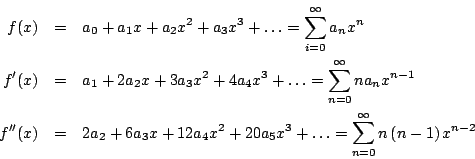
Los siguientes ejemplos muestran como aplicar el método de las series de potencias a la solución de ecuaciones diferenciales. Iniciamos con un ejemplo muy simple, pero que nos hará entender la mecánica del método.
Ejemplo
Solución
Supongamos que la solución se puede expresar como
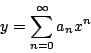
Entonces, 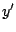 esta dada por
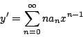
Sustituyendo en la ecuación diferencial, obtenemos que
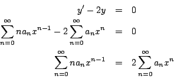
Ahora debemos ajustar los índices de las sumas de forma que aparezca 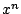 en cada serie.
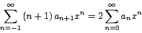
Igualando los coeficientes correspondientes
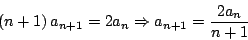
para 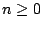. Esta fórmula genera los siguientes coeficientes
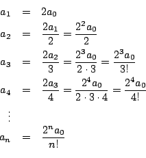
De donde obtenemos que la solución esta dada por
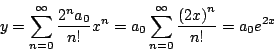
Aquí hemos usado la expansión en series de potencias para la función exponencial
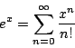
Observación: esta ecuación diferencial puede ser resuelta de manera más simple por medio de separación de variables.
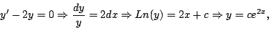
pero como digimos, la idea es ilustrar el método. El siguiente ejemplo no puede ser resuelto por las técnicas estudiadas hasta el momento, a pesar de ser muy simple en apariencia.
Ejemplo
Solución
Suponga que
es una solución de la ecuación diferencial. Entonces
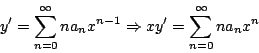
y
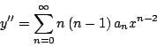
Sustituyendo en la ecuación diferencial
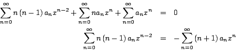
Ajustando los índices
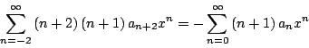
Igualando los coeficientes
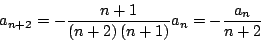
para . De esta forma los coeficientes de la serie solución están dados por:
De esta forma la serie solución se puede representar como la suma de dos series, una para las potencias pares con coeficientes en términos de 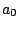 y otra para las potencias impares con coeficientes en términos de 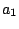.
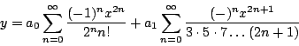
Observación: la solución tiene dos constantes arbitrarias y tal como era de esperar para una ecuación diferencial de segundo orden. El siguiente ejemplo ilustra el procedimiento cuando la ecuación diferencial tiene condiciones iniciales.
Ejemplo
Use el teorema de Taylor1.1 para hallar la solución en serie de potencias del problema de valor inicial
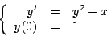
A continuación, use los primeros seis términos de la
solución para aproximar los valores de en el intervalo
Solución
La solución del problema de valor inicial puede expresarse por medio del teorema de Taylor como
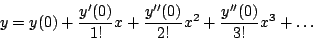
con . Como 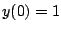 y 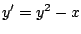, tenemos que
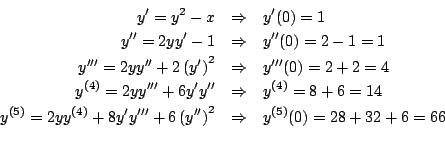
De donde obtenemos que
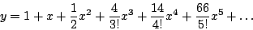
Usando los seis primeros términos de esta serie, calculamos los valores de que se muestran en la siguiente tabla, además en la figura 1.1 se muestra la gráfica de este polinomio.
Observación: para una serie de Taylor entre más lejos estemos del centro de convergencia (en este caso ), menor es la precisión de nuestra estimación. Es importante tener claro que si las condiciones iniciales están dadas en 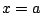, debemos usar el desarrollo en series de potencias para la solución alrededor de .
Ejemplo
Encuentre una series de potencias para la solución general de la ecuación diferencial
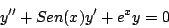
Solución

Además, recuerde que
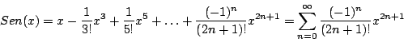
y
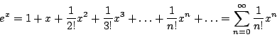
para toda
Sustituyendo en la ecuación diferencial obtenemos que
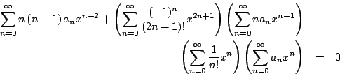
Multiplicando las series y simplificando tenemos que
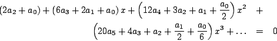
Igualando cada uno de los coeficientes a cero
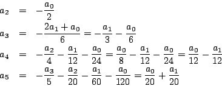
Sustituyendo estos valores en la serie tenemos que
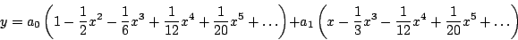
para
Observación: algunas veces cuando necesitamos multiplicar dos series es útil la siguiente fórmula
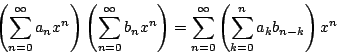
|